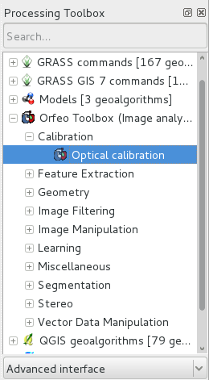

OTB gyorstalpaló¶
Az ORFEO Toolbox könyvtár (OTB) egy nagy teljesítményű könyvtár távérzékelési célú képfeldolgozáshoz.
Ez a gyorstalpaló leírja:
- Metaadatok beszerzése egy képből
- Matematikai műveletek a képsávok között
- Raszter képek megnyitása a monteverdi alkalmazással, szegmentáció végrehajtása (mean-shift clustering) és az eredmény megjelenítése
- Ellenőrzött osztályozás végrehajtása a Support Vector Machine algoritmus alapján
Az OTB alkalmazások rengeteg érdekes eszközt biztosítanak, melyek megkönnyítik a képek manipulálását. Mindezek az eszközök elérhetők az alábbi módokon:
- CLI (parancssori interfész): minden alkalmazás meghívható a terminálból az otbcli_ plusz az alkalmazás neve pranccsal
- GUI (egy önálló grafikus felhasználói felület Qt-ben): az alkalmazások hívhatók a terminálból az otbgui_ aliassal plus az alkalmazás neve. Egy másik lehetőség egy kis indító használata (elérhető a menüből -> Geospatial -> Spatial Tools -> OTB Launcher)
- QGIS modul: elérhető a feldolgozás keretrendszeren keresztül
- Ebben a gyorstalpalóban használ mintaadatok itt találhatók:
- /home/user/data/north_carolina/rast_geotiffs
Contents
Kép metaadatainak megjelenítése¶
A képben tárolt metaadatokat megkaphatja az otbcli_ReadImageInfo paranccsal. Az egyetlen paraméter az input képfájl neve, például:
otbcli_ReadImageInfo -in ortho_2001_t792_1m.tif
Számológép a képsávokra¶
Az otbcli_otbBandMath egy hatékony megoldást biztosít a képsávokon végrehajtott matematikai műveletekhez. A szintaxis egész egyszerű, például két sáv kivonásához használja a következő parancsot az lsat7_2002_10.tif és lsat7_2002_20.tif`, képek különbségének kiszámításához:
otbcli_BandMath -il lsat7_2002_10.tif lsat7_2002_20.tif -out difference.tif -exp "im1b1-im2b1"
Az alkalmazás képes képeken komplex matematikai műveleteket végrehajtani (küszöbérték, logaritmikus átskálázás…). Ezt a digitális számológépet testreszabott függvényeket is tartalmaz teljes kifejezések kiszámítására. Például, mivel a távérzékelt képek fizikai mennyiségeket mérnek, lehetséges fizikai jelentéssel bíró indexek kinyerése, mint például NDVI (normalizált vegetációs különbség index) a vegetációra. A számológéppel kiszámíthatja az NDVI értékét egy multispektrális szenzor képéből így:
otbcli_BandMath -il lsat7_2002_30.tif lsat7_2002_40.tif -out ~/ndvi.tif -exp "ndvi(im1b1,im2b1)"
Az lsat7_2002_30.tif fájl megfelel a LandSat 7 vörös sávjának, a lsat7_2002_40.tif pedig a közeli infra-vörösnek.
Ezután az input és az eredmény képeket megjelenítheti ezzel a paranccsal:
monteverdi lsat7_2002_30.tif lsat7_2002_40.tif ~/ndvi.tif
Pixel alapú osztályozás¶
Az alkalmazási keretrendszerben található osztályozások egy felügyelt pixel-osztályozási láncot biztosít, mely több képből tanuláson alapszik és egy megadott gépi tanulási algoritmust használ, mint például SVM, Bayes, KNN, Random Forests, Artificial Neural Network és továbbiak… (lásd az TrainImagesClassifier alkalmazás súgóját további részletekért a rendelkezésre álló osztályozásokról). Támogatja a hatalmas képeket a streaming és a multi-threading segítségével. Az osztályozási lánc tanulási lépést hajt végre az egyes pixelek intenzitásának függvényében. Kérjük, vegye figyelembe, hogy az összes bemeneti képnek azonos számú sávnak kell lennie ahhoz, hogy összehasonlítható legyen.
Az alkalmazás felfedezéséhez ezt a parancsot használhatja
otbgui_TrainImagesClassifier
Szegmentáció végrehajtása¶
Az OTB Sementation alkalmazás lehetővé teszi, hogy különböző raszter szegmentálást hajtsunk végre különböző algoritmusokkal, akár nagy raszterekre skálázva és vektor output előállításával, melyeket GIS programba importálhat. Az alkalmazásban négy szegmentálási módszer áll rendelkezésre:
- Mean-Shift
- Vízgyűjtő terület (ITK implementáció)
- Connected-Components
- Morfológiai metszet
Ezekkel a parancsokkal tesztelheti a szegmentációt:
- Többsávos Red-Green-Blue-Nir kép létrehozás
otbcli_ConcatenateImages -il lsat7_2002_30.tif lsat7_2002_20.tif lsat7_2002_10.tif lsat7_2002_40.tif -out ~/lsat7_rgbn.tif
- Szegmentáció
otbcli_Segmentation -in ~/lsat7_rgbn.tif -filter meanshift -mode raster -mode.raster.out ~/segmentation.tif
- Színek generálása címkék helyett
otbcli_ColorMapping -in ~/segmentation.tif -out ~/segmentation_colored.tif -method image -method.image.in ~/lsat7_rgbn.tif
Ezen felül a az alkalmazás két különböző módban képes működni:
- Raszter mód: egy kis kép szegmentálását teszi lehetővé és olyan rasztert hoz létre ahol
a szegmentáció összetevőit egy egyedi egész számmal címkézi
- Vektor mód: nagy képek szegmentálása és vektor fájl létrehozása, ahol
a szegmentáció szegmenseit zárt idomok reprezentálják

Az OTB magába foglal egy keretrendszert, LSMS névvel, a nagyon nagy képek csempénként történő szegmentálását, mely elméletileg ugyanazt az eredményt adja a mint csempék nélküli megoldás.
OTB a QGIS-ben¶
Az OTB alkalmazások ugyanez a készlete használható a QGIS-ben a Processing -> Toolbox-ból. Az alkalmazások tegek szerinti sorrendben jelennek meg.

Fejlesztés OTB-vel¶
Ha az OTB könyvtárat akarja használni és a C++ kódját az OSGeoLive-ban lefordítani, akkor a libotb-dev és libqt4-dev fejlesztői csomagokat kell telepítenie. Ellenőrizze, hogy a cmake-t telepítették-e. Az OTB_DIR automatikusan meg kell találni (általában /usr/lib/x86_64-linux-gnu/cmake/OTB-…). A CMake konfigurációjában a könyvtárakat az OTB_LIBRARIES változóhoz kell kapcsolni. További információ a SoftwareGuid-ban található.
Mi a következő?¶
OTB Software Guide
A fő információ forrás az OTB Software Guide. Ez egy átfogó kézikönyv, mely körülbelül 600 oldalt tartalmaz, és részletesen ismerteti az OTB telepítéséhez és használatához szükséges lépéseket. Az elérhető osztályok többségét valódi távérzékelési feldolgozások eredményivel részletesen illusztráljuk.
OTB CookBook
Egy nem a fejlesztőknek szóló kézikönyv is elérhető az OTB alkalmazásokhoz és Monteverdihez. Ez a kézikönyv az OTB alkalmazások és Monteverdi rövid bemutatásából áll, melyet a szokásos távérzékelési feladatok végrehajtásáról szóló receptek követnek, mindkét eszközzel.
OTB Oktatóanyagok
Kövesse az oktatóanyagokat, hogy többet tudjon meg az OTB-ről.
OTB alkalmazások dokumentációja
Nézze meg az OTB alkalmazásokról szóló részletes dokumentációt is
OTB kurzusok Pieiades képekkel az OTB alkalmazások és Monteverdi használatának megtanulásához
Kövesse a kurzusokat, hogy többet megtudjon az OTB-ről (lásd a Tutorials fejezetet).